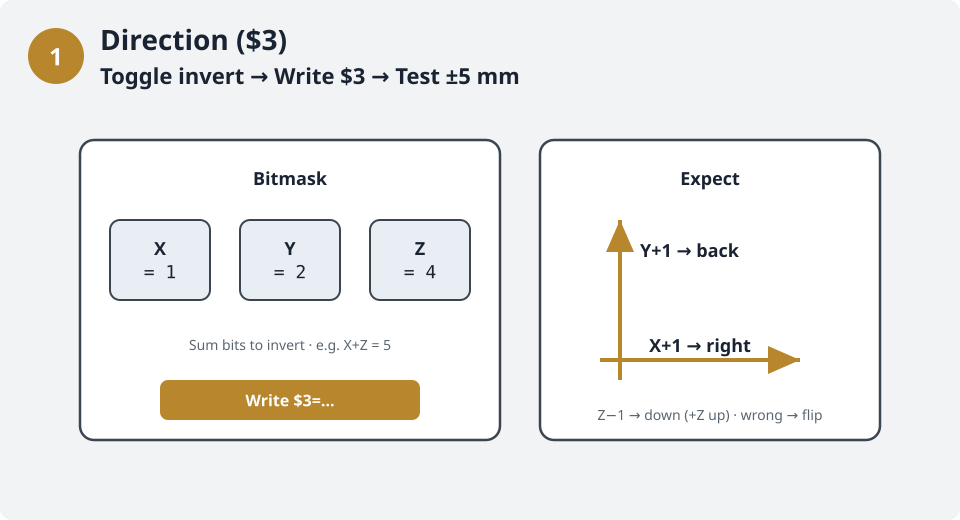

-
Phase switcher → Calibrate (or Menu → Calibrate… / First-run). Connect first if you are not Linked / Virtual. Clear the bed. Keep Z high. For each axis, tap Test +X / Test −X (and Y/Z).
Expect Calibrate opens on Axis direction. Short ~5 mm jog. Looking down on the bed (matches the visualizer): +X right, +Y back = up on screen, +Z up. Wrong way = that axis needs invert.
-
Check Invert X / Y / Z for any reversed axis. Draft mask updates (bits X=1, Y=2, Z=4).
Expect Draft mask number changes; Write button enables when dirty.
-
Tap Write $3=…, then re-run the Test ± buttons.
Expect Current $3 matches the draft; + jogs now match the bed. Activity log shows the write.
-
Check Jog direction matches the machine — I completed this step, then Next.
Expect Wizard advances to Steps per mm.
Expect: +X right · +Y back (up on screen) · +Z up (looking down on bed)
Next: Steps/mm →